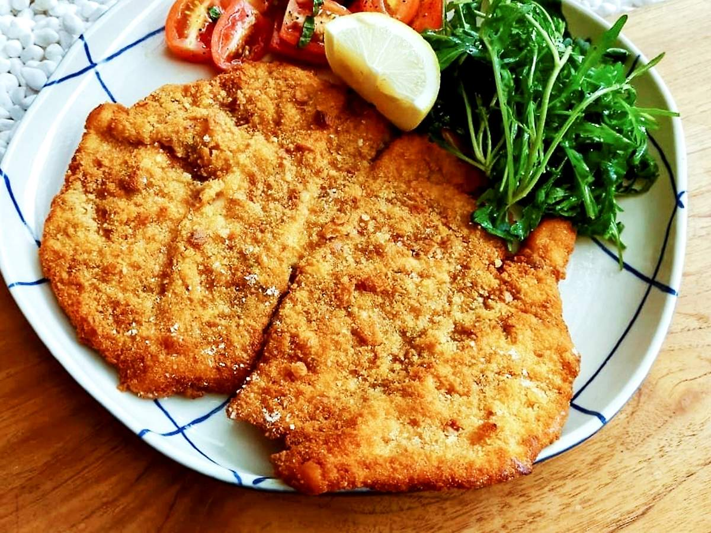
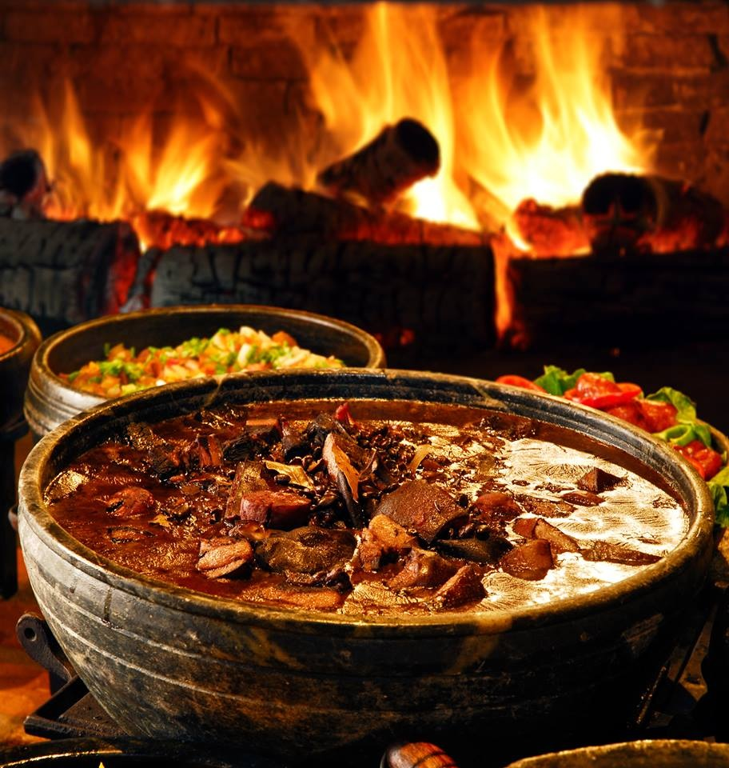

Quem somos?
Nossa História
O Restaurante Bom Sabor nasceu de um sonho simples: levar à mesa de cada cliente o sabor autêntico da comida caseira, preparada com afeto, ingredientes frescos e aquele toque de tempero que memória afetiva nenhuma esquece.
Desde a nossa fundação, nos dedicamos a criar um ambiente acolhedor onde famílias, amigos e colegas de trabalho possam se reunir para compartilhar não apenas refeições, mas bons momentos. Para nós, cozinhar é uma forma de carinho, e cada prato que sai da nossa cozinha carrega essa dedicação.
Nossos Compromissos:
- Ingredientes Selecionados:
Trabalhamos com fornecedores locais para garantir vegetais, carnes e temperos sempre frescos na sua mesa.
- Atendimento Acolhedor:
Queremos que você se sinta em casa. Nossa equipe está sempre pronta para receber você com um sorriso.
- Paixão pela Gastronomia:
Combinamos receitas tradicionais com um toque de inovação para surpreender seu paladar todos os dias.
Nossos 3 melhores pratos
Top 1 - Prato de Fritas

Porção generosa de batatas crocantes, cobertas com queijo derretido, bacon em cubos bem dourado e finalizadas com salsinha e hortelã fresco. Acompanha molho da casa.
Top 2 - Frango Empanado

Saborosas tiras de peito de frango ultra crocantes por fora e suculentas por dentro. Servidas com molho barbecue e maionese de alho da casa.
Top 3 - Feijoada

Nossa deliciosa feijoada completa em porção individual, servida com arroz branco, couve refogada, farofa caseira e torresmo bem crocante.
Agradecimento
O Restaurante Bom Sabor agradece pela atenção e esperamos a sua visita